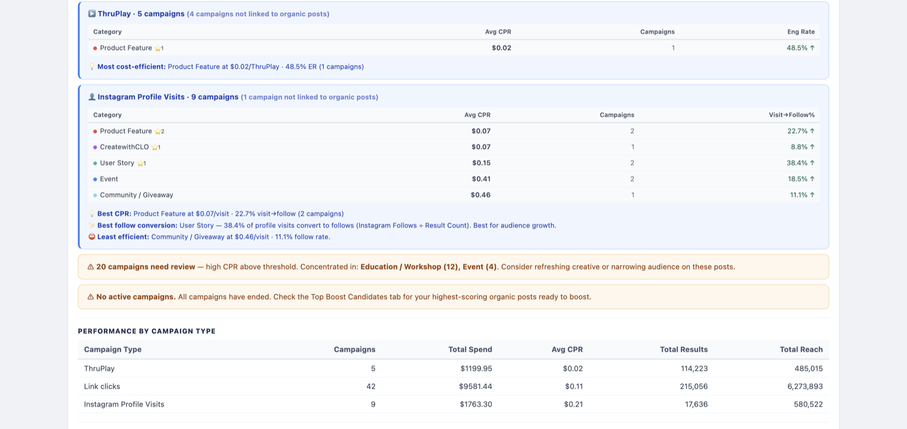

One
2026.0 Launch & Creator Strategy
Situation
A release with multiple new tools needed feature-specific stories for different creator niches.
Task
Develop feature-level content plans and coordinate product accuracy, storyboards, and creator fit.
Action
Aligned with Product on 7+ core features, helped plan video storyboards, and matched specialist creators to product demonstrations.
Result
A lead feature video reached 590K+ accounts and generated 54K+ engagements.

Two
Content Diagnostics & Attribution
Situation
The team had no dedicated analytics role and relied on manual checks of content performance.
Task
Build a repeatable feedback loop connecting content, spend, and marketing decisions.
Action
Built a UTM tracker, standardized campaign links, integrated TikTok and Instagram data through APIs, and developed an AI-assisted content diagnostic workflow.
Result
Delivered monthly recommendations for planning and review. The dashboard covered 480+ posts across 8 categories and identified Reels as 72% of the high-performing tier.



Three
AI Tagging & Visual Asset Operations
Situation
More than 2,000 creator assets were scattered across Drive and difficult to retrieve.
Task
Make the library searchable and usable in campaign planning.
Action
Combined ffmpeg preprocessing with visual-LLM classification by garment type, complexity, color, and aesthetic, validated a pilot, and connected the tags to a search interface.
Result
Delivered a library with multidimensional filtering so the team could find assets by campaign direction. No standardized time-saving measurement was recorded.